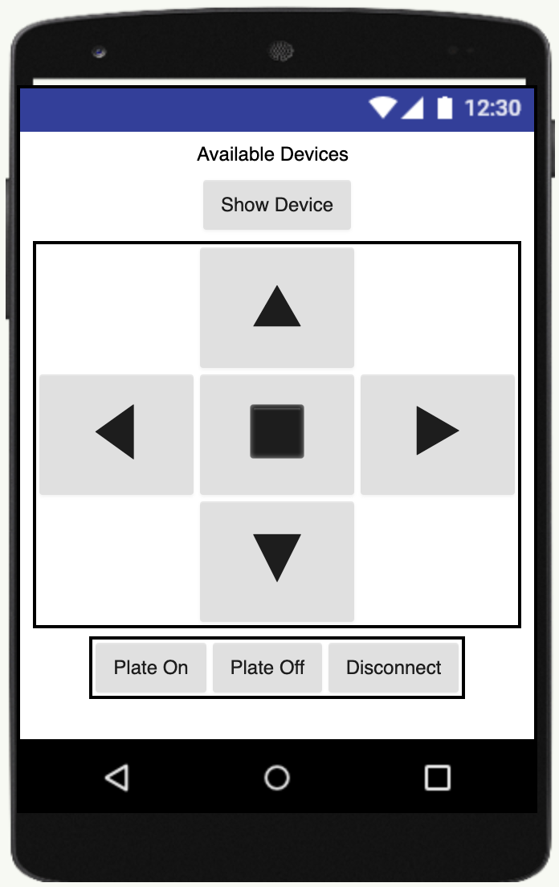
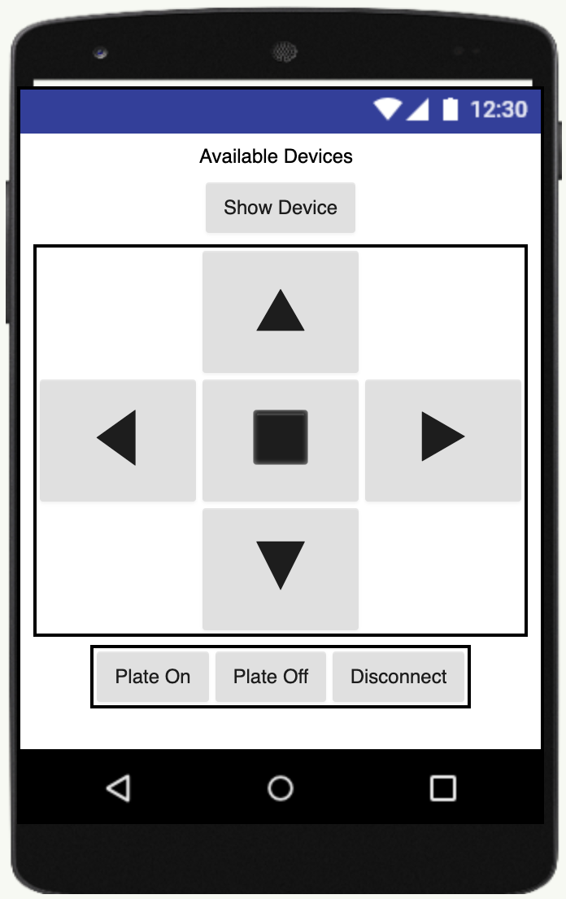
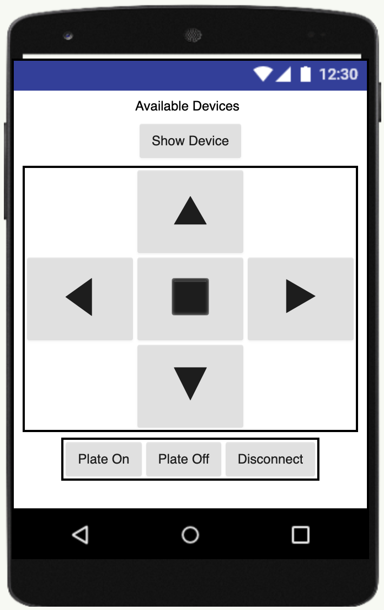
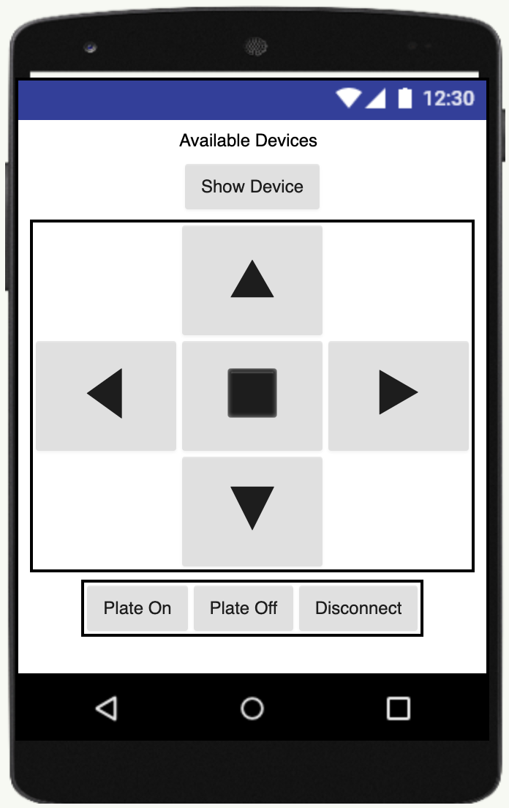

Icy days are an issue that people in cold areas struggle with in the winter. Especially early in the morning, no one wants to brave their slippery porch or driveway, to clear out the snow and ice with salt or shovels. Our bluetooth controlled salt sprinkling robot, Salt-E attempts to ease the driveway clearing process.
The current prototype of our robot consists of a base structure of laser cut acrylic and attatched wheels. There is also a tank with a lid that holds the salt. There are three programmed Arduino Uno microcontrollers, that each connect to different motors. The central system consists of the four wheel motors, an L298n motor stepper, and a HC-05 bluetooth module. The HC-05 module can be connected to our Android application, in order to control motion. The other two microcontrollers make up the dispersion system. Both motors are connected to potentiometers to start up the dispersion plate and open the bottom of the tank.
I was in charge of developing the Android application and integrating the application features into the Arduino code. I also programmed and wired both of the motor circuits for the dispersion system. Before implementation, I also created the initial sketches of the robot and the app.
The initial development process taught me a lot about differing perspectives. A robot was my initial idea to mitigate icy day woes, but discussions with my team about concerns like cost, convenience, and accessibility led us to design other possible devices like driveway light fixtures.
The implementation stage taught me two valuable lessons. First off, don't reinvent the wheel when prototyping. Initially, I had intended to develop my own bluetooth app from scratch. However, it took away a lot of time from adding additional features, and helping out with the initial
building of the circuit. The second takeaway I got from making our robot is adaptability. A semester ago, if someone asked me whether or not I knew Arduino, I would probably say my knowledge was limited. However, after the completion of this project, it feels very rewarding knowing that
I could make a significant impact in the robot's electrical functionality. I even learned more about power demands, soldering, and generally how circuits function.